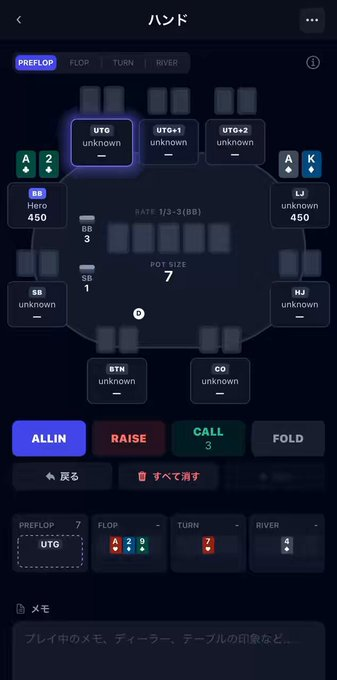
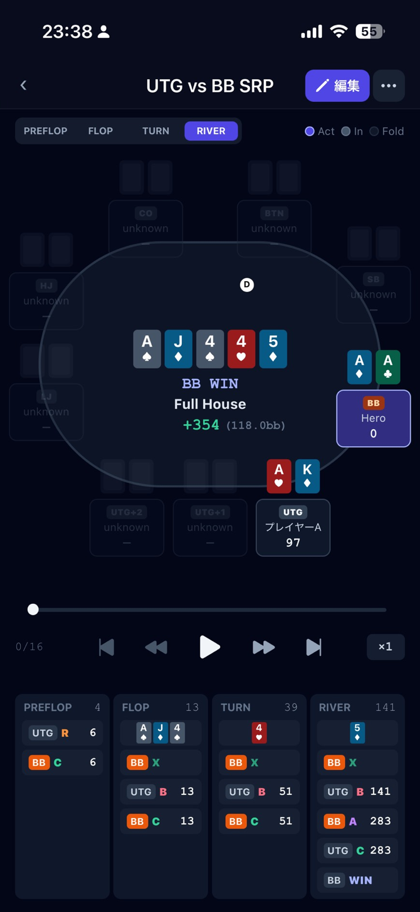
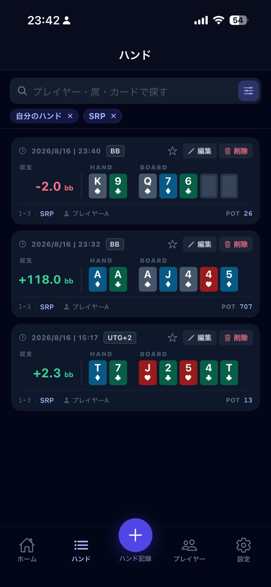
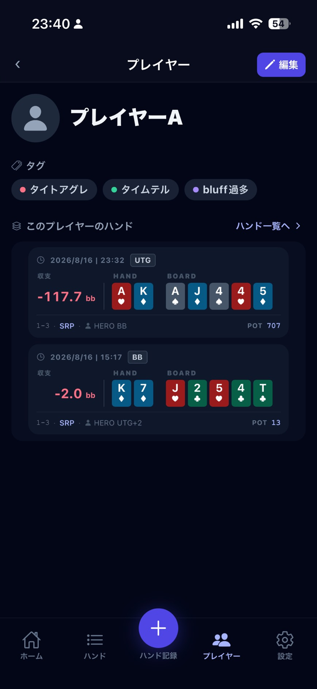
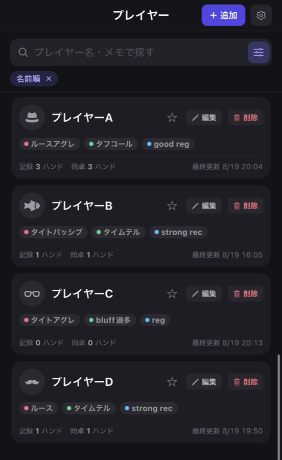

LiveCache@LiveCache_poker
＼ アップデート情報 ／ 記録したハンドを「動画」で保存できるようになりました！ 保存した動画は X、LINE などで簡単に共有できます。もちろん無料で使えます。
投稿を見る ↗ライブポーカーのハンド記録アプリ
＼ アップデート情報 ／ 記録したハンドを「動画」で保存できるようになりました！ 保存した動画は X、LINE などで簡単に共有できます。もちろん無料で使えます。
投稿を見る ↗記録時に毎回同じレートを打つのが大変… 【機能紹介：レート自動入力】 LiveCache はトナメのレートを事前登録すれば、ハンド入力時に自動設定されます！ ※リングゲームも同様にレート登録が可能です
投稿を見る ↗＼ ポーカーハンド記録アプリの決定版 ／ LiveCache（iOS 版）がリリースしました！ ・1 手 1 タップで爆速記録 ・店舗／トナメでレート登録、まとめて見返し ・対戦相手ごとにハンド履歴＆タグ ・ハンドを画像／テキストで共有

投稿を見る ↗FEATURES
打った席を押せば、あいだの席は自動でフォールド。
写真やカメラから、場のカードを入れる。
リプレイPROと動画の保存。収支は自動で計算。
人ごとにハンドが貯まり、タグとメモが付く。




BOARD SCAN
カメラを向けると、場のカードを読み取ります。全部そろったら、自動で撮って入れます。
PLANS
UPDATES
REQUEST